# A tibble: 6 × 2
x y
<dbl> <dbl>
1 24.4 32.9
2 35.2 12.2
3 26.3 41.7
4 0.376 15.5
5 26.1 3.96
6 25.9 31.5 K means clustering
R
coding
microstates
K means algortihm walk through presented at the lab meeting to explain this technique.
Brief overlook
K-means is a class of unsupervised clustering algorithms that was developed within the field of signal processing. Given a set of data points \(X={x_{1}, x_{2}, x_{3}, ..., x_{N}}\), the aim is to find k clusters of points so that the Euclidean mean of the points within each cluster is minimised. Conversely, the distance between clusters is maximised.
Although there are many different k-means algorithms, the general procedure is the following:
- Define the number of clusters (k)
- Initialise the center point (centroid) for each cluster
- Compute the distance between each point and every centroid
- Assign points to the cluster whose centroid is minimally distant
- Update the centroid location
- Repeat assignment and updates until the difference between iterations in negligible
For this simulation we are going to use the data provided here
The dataframe looks like this.
Define the number of clusters
The number of clusters depends on the specific application. For instance, in EEG microstate analysis one common practice is to define the use of 4 clusters, which are descriptively called A, B, C, and D. However, note that defining a number a priori is a drawback of this technique. Ideally we would like to find a value that allows explaining the greatest proportion of variability in the data (without assigning each data point to a different group). Consequently, forcing the use of 4 - or any other number - of clusters might be a suboptimal option. We are going to discuss this a bit more later on. For the moment let’s be sneaky and look at the data.
Our data contains X and Y coordinates for 60 points which are so distributed:
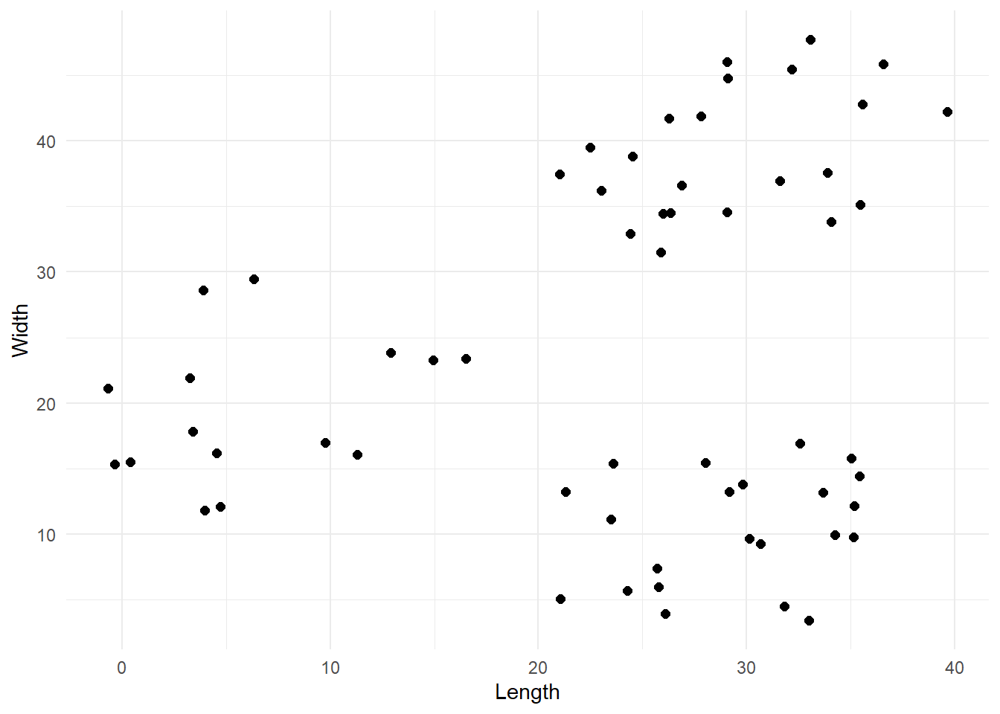
From the plot we can reasonably say that there are 3 clusters, so we are going to work with that.
#Define number of clusters (k)
k <- 3Initialise centroids
The first step of this algorithm is to select the k points that are stereotypes of the clusters. In other words, points that are representative of the groups we want to create. These points are called centroids or prototypes. Obviously, we do not know what groups we will end up with, so the simplest way to select the first centroids is to pick k points at random. Let’s define a function that does exactly this.
# Define function that select k centroids from a dataset.By default the function will select 2 centroids if no k is provided
pick_centroids <- function(data, k, seed=1234){
# Randomly select k rows from the dataset provided
set.seed(seed)
centroids <- data[sample(nrow(data),k), ]
# Add a unique letter label
centroids <- cbind(centroids, 'label'=LETTERS[1:k])
return(centroids)
}We can now pick 3 random centroids and visualize them.
# Select first centroids
centroids_1 <- pick_centroids(df, k=3, seed=19)
# Visualise them
df %>%
ggplot(aes(x=x, y=y)) +
geom_point(size=2, alpha=0.5, colour='gray') +
geom_point(data=centroids_1, aes(x=x, y=y, colour=label), size=5, shape=15) +
labs(x = 'Length',
y = 'Width') +
theme_minimal()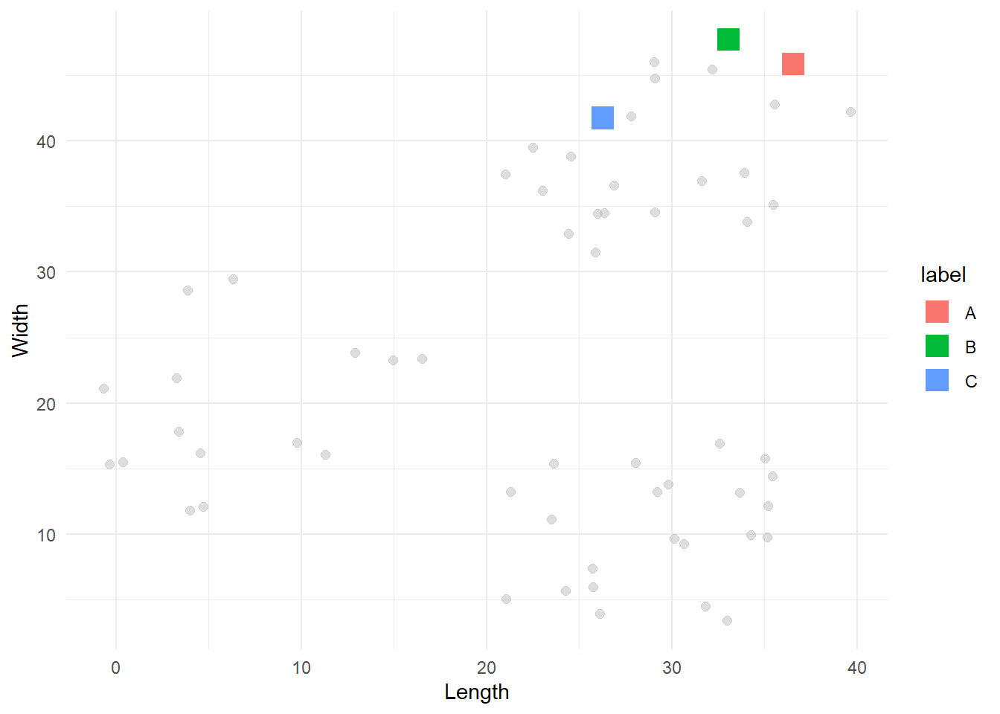
Compute the distance between each point and each cluster
Once the first centroids have been selected, we can start to divide all the other points into the corresponding clusters. Each point will be assigned to the cluster represented by the centroid that is its closest geometrically. To do so, we need to compute the Euclidean distance between every point and every centroid. Then, we select the minimum distance and assign the point to that centroid’s group. The Euclidean formula is:
\[ \bar{A,B} = \sqrt{(x_{A} - x_{B})^{2} + (y_{A} - y_{B})^{2}} \] The following function returns two pieces of information for each point. Firstly, the assigned group as defined by the minimum Euclidean distance from the corresponding centroid. Secondly, an “error’ value defined as the distance between the point and its closest centroid. We will use this error to set up a stopping rule for our k-means algorithm later on.
# Define function to compute the Euclidean distance
euclidean_distance <- function(data, centroid){
distance <- sapply(1:nrow(data), function(i){
sqrt(sum((data[i,] - centroid)^2))
})
return(distance)
}
# Define a function that applies the euclidean distance to each point and returns the minimum
# Note that this function presupposes that the centroids have a x and y coordinates columns
find_min_distance <- function(data, centroids, c_coord){
# Firstly we compute the distance between each point and each centroid
distances <- sapply(1:nrow(centroids), function(i){
euclidean_distance(data, centroids[i, c_coord])
})
# For each point let's find the centroid with the minimum distance
min_idx <- apply(distances, 1, which.min)
# We also extract the minimum distance so we can return it
min_distance <- apply(distances, 1, FUN = min)
# Extract the associated labels
min_labels <- sapply(1:length(min_idx), function(i){
centroids$label[min_idx[i]]
})
return(list('error'=min_distance, 'labels'=min_labels))
}Now we can apply this to every point in our dataset.
first_iter <- find_min_distance(df, centroids_1, c('x', 'y'))
# Let's plot this
cbind(df, 'label' = first_iter$labels) %>%
ggplot(aes(x=x, y=y, colour = label)) +
geom_point(size=2, alpha=0.7) +
geom_point(data=centroids_1, aes(x=x, y=y, colour=label), shape=15, size=5) +
labs(x = 'Length',
y = 'Width') +
theme_minimal()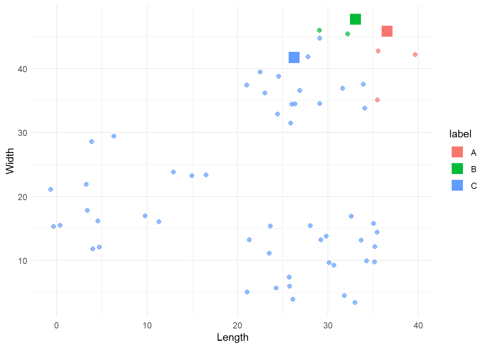
That looks like a good starting point, although the B group dominates most of the data. To improve the categorisation, we can build from here by repeating this process over and over. Each time we will select new centroids and assign the points to the group represented by the closest centroid. We do this until there are no more significant changes in the groups.
Update centroids
After one iteration, we need to update the centroids. A simple way to do this is by computing the mean coordinate values for each group. The new centroids will be defined by these mean coordinates.
update_centroids <- function(df, labels){
new <- cbind(df, 'label' = labels) %>%
group_by(label) %>%
summarise(x = mean(x),
y = mean(y)) %>%
relocate(label)
return(new)
}
# Compute new centroids
centroids_2 <- update_centroids(df, first_iter$labels)
# Plot old and new centroids
cbind(df, 'label'=first_iter$labels) %>%
ggplot(aes(x=x, y=y, colour=label)) +
geom_point(size=2, alpha=0.5) +
geom_point(data=centroids_1, aes(x=x, y=y, colour=label), size=3, shape=15) +
geom_point(data=centroids_2, aes(x=x, y=y, colour=label), size=5, shape=4) +
labs(x = 'Length',
y = 'Width') +
theme_minimal()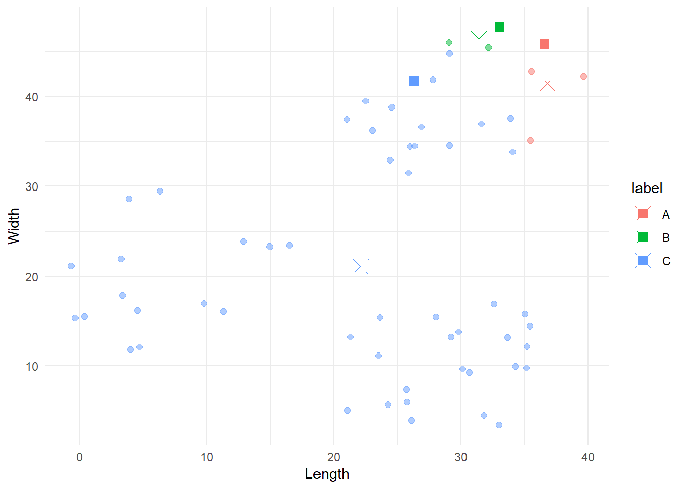
The squares represent the original centroids, the Xs represent the new ones, and the points are still coloured according to their original categorisation. Notice how the blue centroid is now in the centre of its group.
Reiterate
We are ready to reiterate the update and assignation process N times. As said above, we will stop when there are no more significant differences between one categorisation and the next one. To quantify this, we will use the error value we introduce just before. For each point, this is represented by the distance of the point from its closest centroid. Thus, we can sum these error values and use this sum as the stopping rule. When the sum of errors is reduced below a predetermined threshold, then we can stop.
my_kmeans <- function(data, k=2, c_coord= c('x', 'y'), tolerance=1e-4, seed=1234){
# Firstly we find the first centroids
current_centroids <- pick_centroids(data, k=k, seed=seed)
# Create datasets were to store results
labelling <- c()
centroids <- current_centroids
# Reiterate labelling - assignment - update centroids
continue <- TRUE
iter <- 0
previous_error <- 0
while(continue){
# Assign data to centroids
current_groups <- find_min_distance(data, current_centroids, c_coord)
# Store assigned labels with column name as the iteration number
iter <- iter + 1
labelling <- cbind(labelling, current_groups$labels)
# Update centroids
current_centroids <- update_centroids(data, current_groups$labels)
centroids <- rbind(centroids, current_centroids)
# Check if we have minimizes the error below the threshold
current_error <- sum(current_groups$error)
current_err_diff <- abs(previous_error - current_error)
print(sprintf('Iteration %s -> Error: %s', iter, current_err_diff))
if(current_err_diff <= tolerance){
continue = FALSE
}
# If we did not reach the tolerance, update the current error
previous_error <- current_error
}
colnames(labelling) <- 1:iter
# remove last centroid data as it has not been used and assign iter values
centroids <- centroids[1:(nrow(centroids)-k), ]
centroids <- cbind(centroids, 'iter'=rep(1:iter, each=k))
return(list('lables'=labelling, 'centroids'=centroids, 'error'=current_groups$error))
}Let’s iterate on our data.
results1 <- my_kmeans(df, k=3, c_coord=c('x', 'y'), tolerance=1e-4, seed=4)[1] "Iteration 1 -> Error: 458.171667198993"
[1] "Iteration 2 -> Error: 72.4112246075529"
[1] "Iteration 3 -> Error: 0.655622083297658"
[1] "Iteration 4 -> Error: 0"Sweet, for this particular case the algorithm converged in 4 iterations. Let’s see the final result.
cbind(df, 'group'=results1$lables[, ncol(results1$lables)]) %>%
ggplot(aes(x=x, y=y, colour = group)) +
geom_point(size=2) +
labs(x = 'Length',
y = 'Width') +
theme_minimal()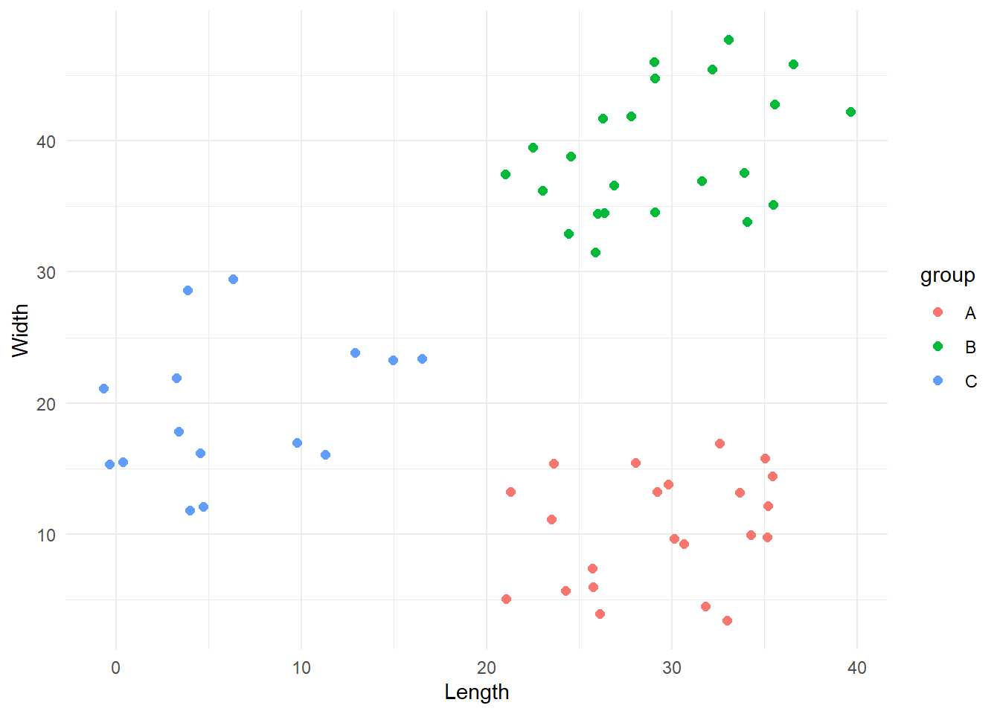
This looks all good! Yay!
Initialization problems
The previous result might make you think that this algorithm is amazing. It categorised our data in just four iterations and with a perfect division. However, things are always more complicated than they initially appear. Indeed, a drawback of the k-means approach is that the final result is highly dependent on the initial centroids. We can demonstrate this by starting the algorithm with different initial centroids. We will exploit the seed argument we provided to our functions.
results2 <- my_kmeans(df, k=3, c_coord=c('x', 'y'), tolerance=1e-4, seed=19)[1] "Iteration 1 -> Error: 1278.04142581076"
[1] "Iteration 2 -> Error: 549.175741899334"
[1] "Iteration 3 -> Error: 120.573809438913"
[1] "Iteration 4 -> Error: 7.0347771777997"
[1] "Iteration 5 -> Error: 10.0949551678153"
[1] "Iteration 6 -> Error: 5.53498901037312"
[1] "Iteration 7 -> Error: 4.606053850374"
[1] "Iteration 8 -> Error: 1.49594562166419"
[1] "Iteration 9 -> Error: 2.36620189065968"
[1] "Iteration 10 -> Error: 0"cbind(df, 'group'=results2$lables[, ncol(results2$lables)]) %>%
ggplot(aes(x=x, y=y, colour = group)) +
geom_point(size=2, alpha=.5) +
geom_point(data=results2$centroids %>% filter(iter==max(iter)), aes(x=x, y=y, colour=label), shape=15, size=5) +
labs(x = 'Length',
y = 'Width') +
theme_minimal()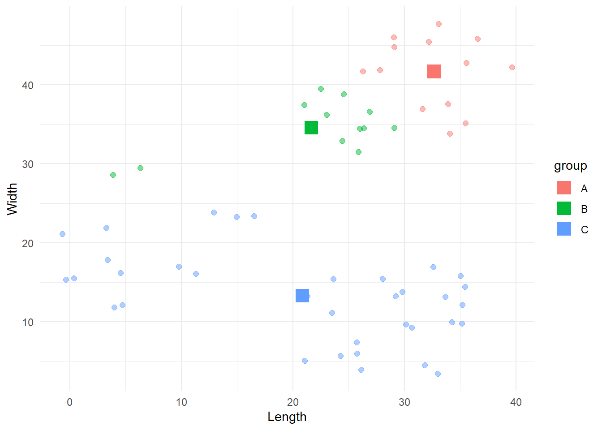
Here the algorithm converged to a suboptimal solution. During the years different solutions have been created to address this problem, with the most popular and reliable being the kmeans++ algorithm created by David Arthur and Sergei Vassilvitskii. If you are interested, the procedure is presented here
How many clusters?
As stated in the introduction, one obvious limitation of this paradigm is that the number of clusters needs to be defined a priori. Thus, we need a system that would allow us to select the optimal number of clusters that reduces the classification error as much as possible without “overfitting”. One simple method to do so is to run the algorithm with different number of clusters and use the scree plot of the error as a guide. To explain this let’s change dataset and pick something with a greater number of observations and a less clear number of clusters. We will use the iris dataset provided in R. Our task is to cluster the flowers into species based on the sepal length and the petal width.
If we look at the raw data we can see two possible groups, but now the situation is more complex than before.
iris %>%
ggplot(aes(x=Sepal.Length, y=Petal.Width)) +
geom_point(size=2) +
labs(x = 'Length',
y = 'Width') +
theme_minimal()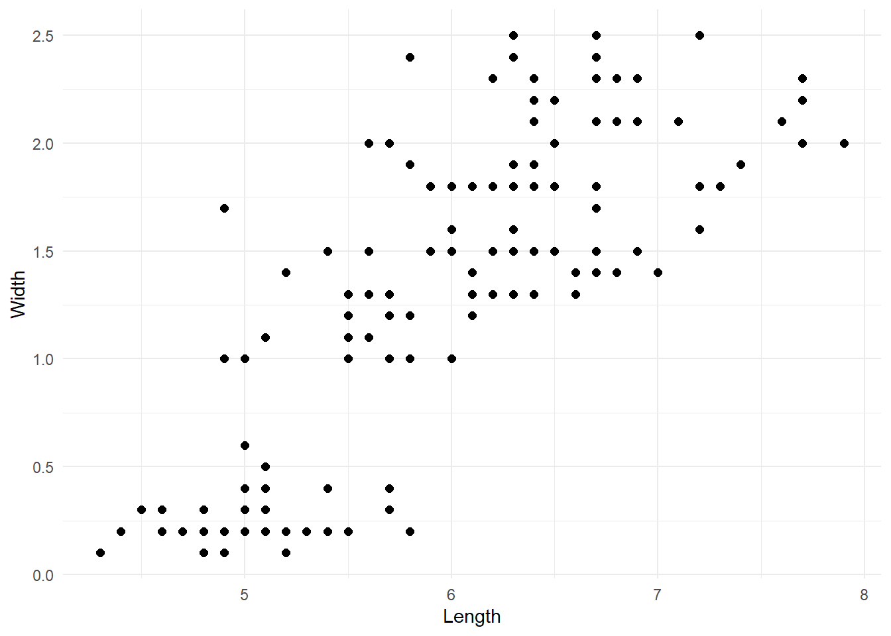
To establish the optimal amount of clusters, we are going to run our k-means algorithm 10 times adding one cluster at each iteration. Each time we will store the final error, so we can plot it later. Here’s the code:
ks <- 1:10
errors <- rep(0, length(ks))
iris_df <- iris[, c('Sepal.Length', 'Petal.Width')]
colnames(iris_df) <- c('x', 'y')
for(r in ks){
errors[r] <- sum(my_kmeans(iris_df, k=r)$error)
}Now we can create the scree plot by visualising the final error for each iteration.
# Make scree plot of the errors
data.frame('error'=errors, 'k'=1:length(errors)) %>%
ggplot(aes(x=k, y=error)) +
geom_point(size=2) +
geom_line() +
scale_x_continuous(breaks = 1:length(errors)) +
theme_minimal()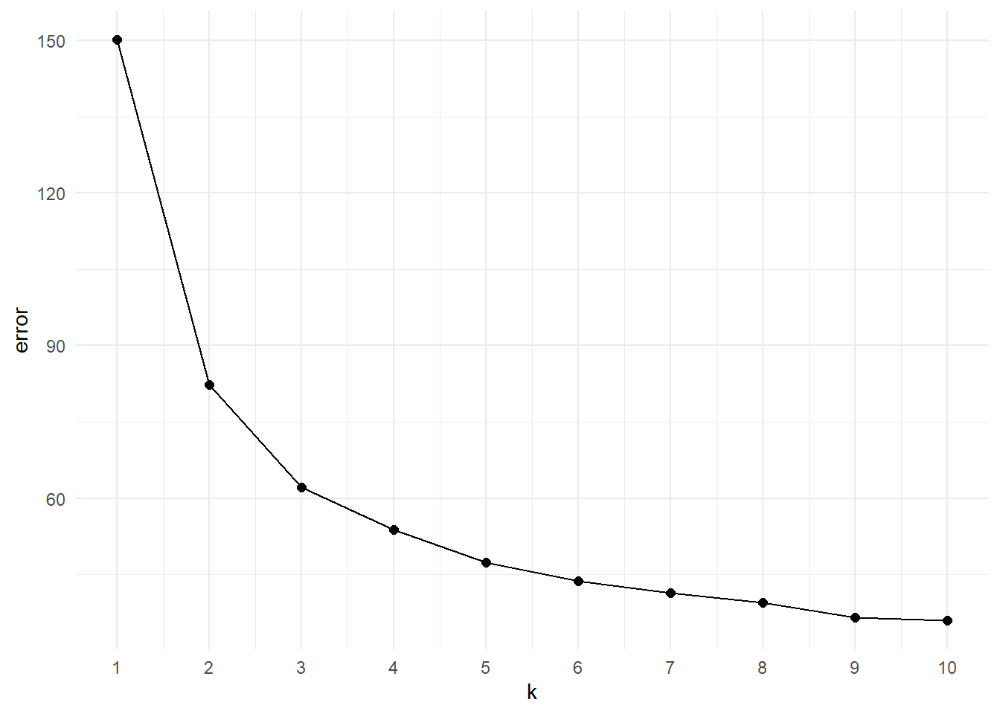
The scree plot is a “descriptive tools” so it won’t tell specifically the correct number of clusters. The main idea here is to look at the elbow of the plot, that is the point at which the trend plateau. This flexion point indicates the value after which increasing the number of groups does not provide a significant decrease in the error. Looking at the plot we can say that the elbow is in between k=3 or k=4. As a starting point we can visualise both of them:
# Compute kmeans with 3 nd 4 clusters clusters
iris_k3 <- my_kmeans(iris_df, k = 3)[1] "Iteration 1 -> Error: 84.5340503544893"
[1] "Iteration 2 -> Error: 22.5320451284015"
[1] "Iteration 3 -> Error: 0.12222997427822"
[1] "Iteration 4 -> Error: 0.194408399479336"
[1] "Iteration 5 -> Error: 0"iris_k4 <- my_kmeans(iris_df, k = 4)[1] "Iteration 1 -> Error: 67.9944121319274"
[1] "Iteration 2 -> Error: 9.13499108999842"
[1] "Iteration 3 -> Error: 1.30457150911509"
[1] "Iteration 4 -> Error: 0.932100341554694"
[1] "Iteration 5 -> Error: 1.0714446191438"
[1] "Iteration 6 -> Error: 0.716841774592375"
[1] "Iteration 7 -> Error: 0.675081843250041"
[1] "Iteration 8 -> Error: 0.318333061193755"
[1] "Iteration 9 -> Error: 0"# Add clustering information resulting from k=3 and k=4 and plot
iris_mykmean <- cbind(iris_df,
'k3' = iris_k3$lables[, ncol(iris_k3$lables)],
'k4' = iris_k4$lables[, ncol(iris_k4$lables)]) %>%
pivot_longer(cols = starts_with('k'),
values_to = 'labels',
names_to = 'k')
iris_mykmean %>%
ggplot(aes(x=x, y=y, colour=labels)) +
geom_point(size=2) +
labs(x = 'Length',
y = 'Width') +
facet_grid(.~k) +
theme_minimal()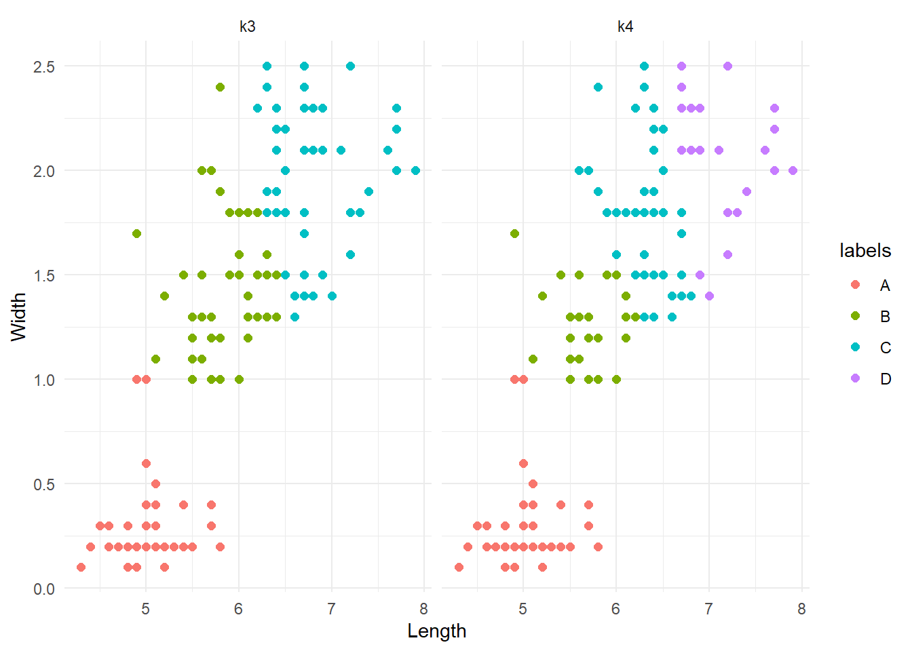
The groups are very similar, or at least there are no weird differences. This is a good thing. To better investigate possible difference between the two clustering systems, we could re-run them with a different seed and see if they are consistent (although we have discussed the implications that the first initialization can have).
# Compute kmeans with 3 nd 4 clusters clusters
iris_k3 <- my_kmeans(iris_df, k = 3, seed = 0905)[1] "Iteration 1 -> Error: 99.0311396766634"
[1] "Iteration 2 -> Error: 24.4105692091305"
[1] "Iteration 3 -> Error: 4.88652621704111"
[1] "Iteration 4 -> Error: 3.47693331688762"
[1] "Iteration 5 -> Error: 2.56320926311736"
[1] "Iteration 6 -> Error: 1.62704674573919"
[1] "Iteration 7 -> Error: 0.0724143145959744"
[1] "Iteration 8 -> Error: 0.057240636048725"
[1] "Iteration 9 -> Error: 0.0225024050884883"
[1] "Iteration 10 -> Error: 0"iris_k4 <- my_kmeans(iris_df, k = 4, seed = 0905)[1] "Iteration 1 -> Error: 97.5708407922748"
[1] "Iteration 2 -> Error: 29.7874124595873"
[1] "Iteration 3 -> Error: 7.83693472432838"
[1] "Iteration 4 -> Error: 2.47590455673429"
[1] "Iteration 5 -> Error: 0.153319685392383"
[1] "Iteration 6 -> Error: 0.0496830708143321"
[1] "Iteration 7 -> Error: 0.0799826359733871"
[1] "Iteration 8 -> Error: 0"# Add clustering information resulting from k=3 and k=4 and plot
iris_mykmean <- cbind(iris_df,
'k3' = iris_k3$lables[, ncol(iris_k3$lables)],
'k4' = iris_k4$lables[, ncol(iris_k4$lables)]) %>%
pivot_longer(cols = starts_with('k'),
values_to = 'labels',
names_to = 'k')
iris_mykmean %>%
ggplot(aes(x=x, y=y, colour=labels)) +
geom_point(size=2) +
labs(x = 'Length',
y = 'Width') +
facet_grid(.~k) +
theme_minimal()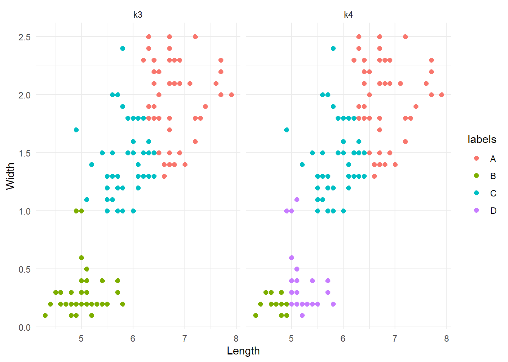
Note that the colours can change between iterations. What we are interested in are the patterns of groups. The results are interesting. k=3 produced the same results as before. Conversely, k=4 did something different; it divided the lower cluster of points into two groups. Although this is not a formal assessment, from here we might want to say that k=3 is more reliable and go with it. As a final test, let’s compare these results agains the real division by species.
iris %>%
ggplot(aes(x=Sepal.Length, y=Petal.Width, colour=Species)) +
geom_point(size=2) +
theme_minimal()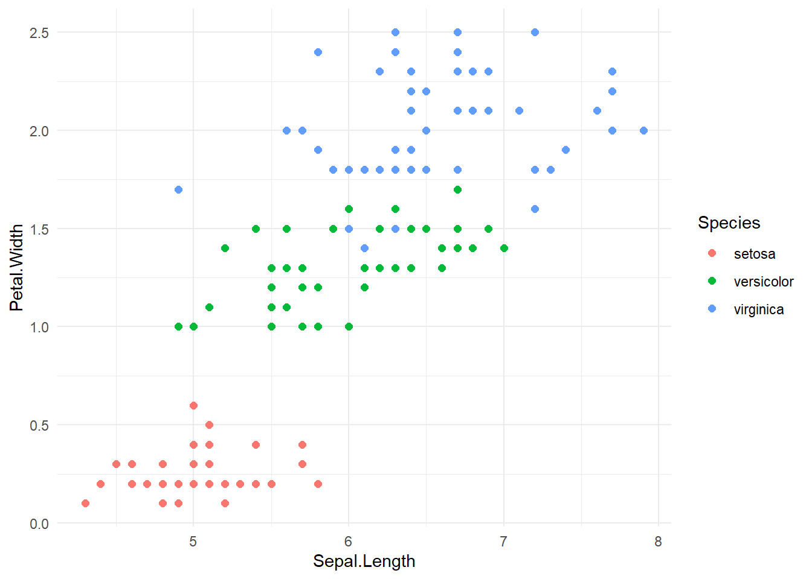
Let’s hihglight the differences:
# Let's assign a species label to to A, B, D clusters
species <- unique(iris$Species)
# Merge datasets and code whether there groups are the same
iris_binded <- cbind(iris, 'my_kmeans' = iris_k3$lables[, ncol(iris_k3$lables)]) %>%
mutate(
my_species = case_when(
my_kmeans == 'A' ~ species[3],
my_kmeans == 'B' ~ species[1],
TRUE ~ species[2]),
equal = case_when(my_species != Species ~ 0,
TRUE ~ 1))
# Plot highlighting difference
iris_binded %>%
ggplot(aes(x=Sepal.Length, y=Petal.Width, colour = factor(equal))) +
geom_point(size = 3) +
scale_colour_manual(values = c('red', 'lightgray'), name = 'Difference', labels = c('different', 'equal')) +
labs(x = 'Length',
y = 'Width') +
theme_minimal()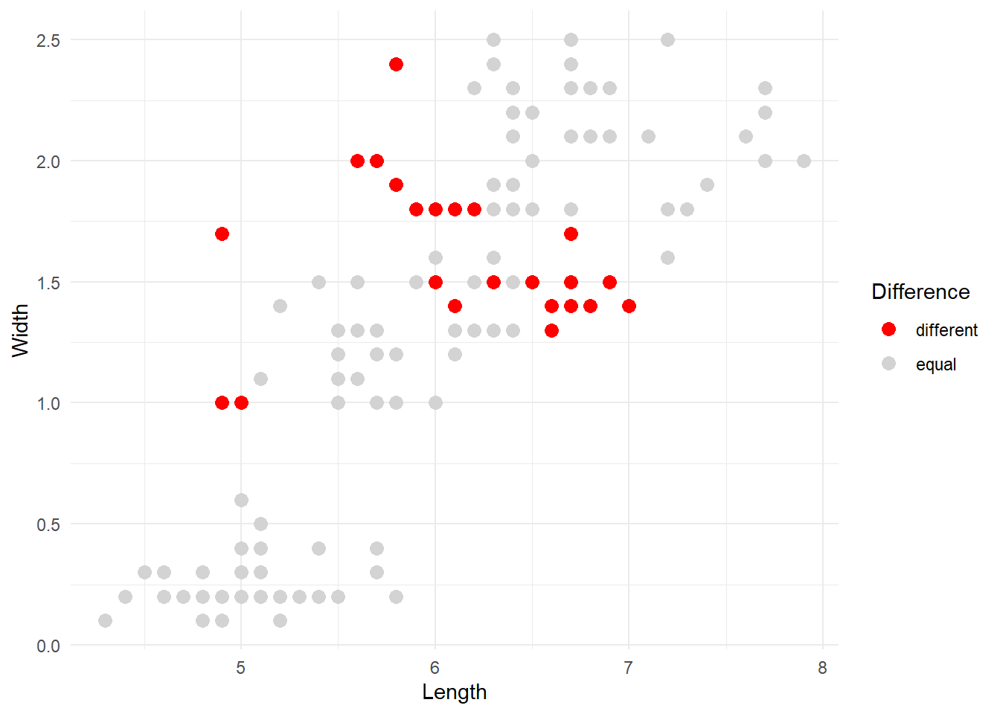
The red dots are the observations that our kmeans algorithm categorised differently compared to the original division into species. Overall, the result can be improved but it’s not too bad considering that the majority of points were correctly identified.